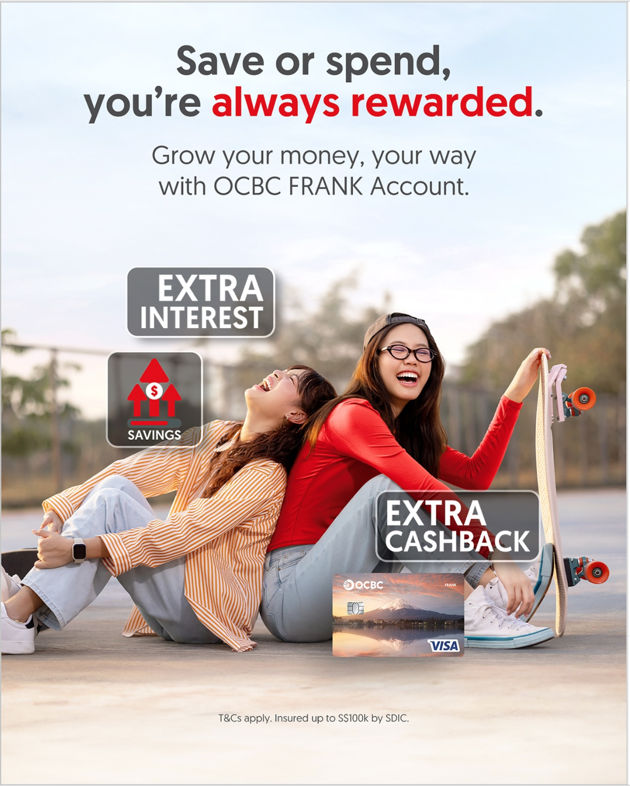
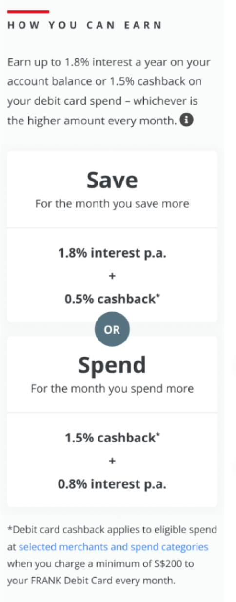
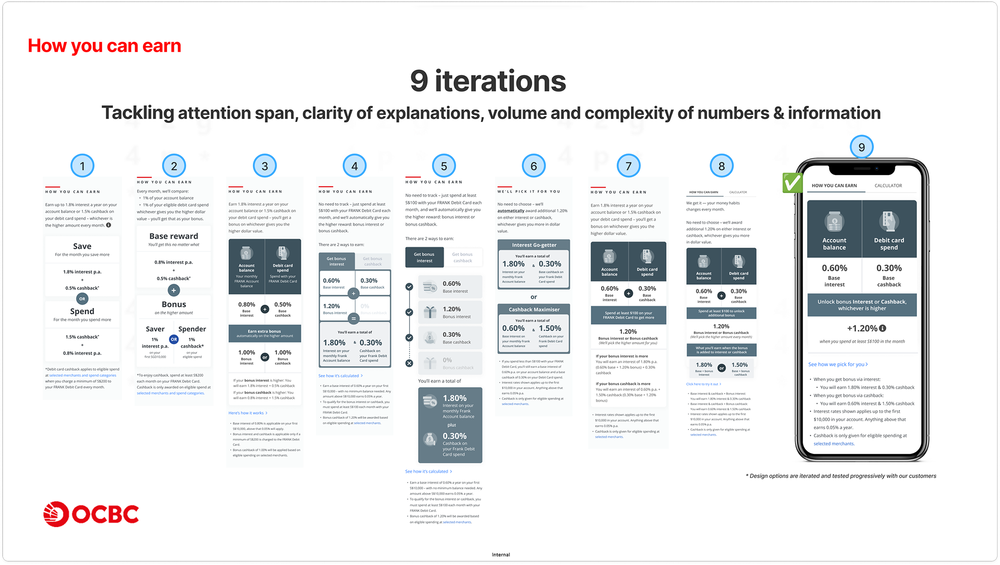
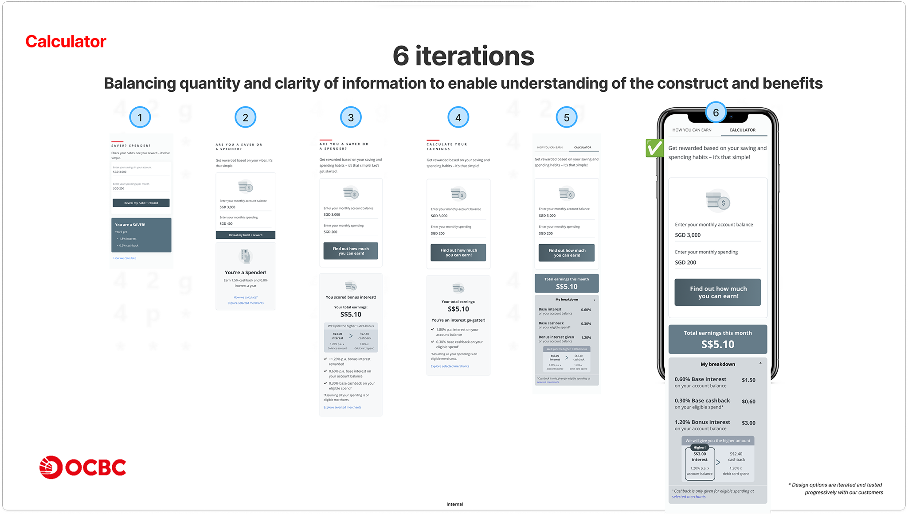
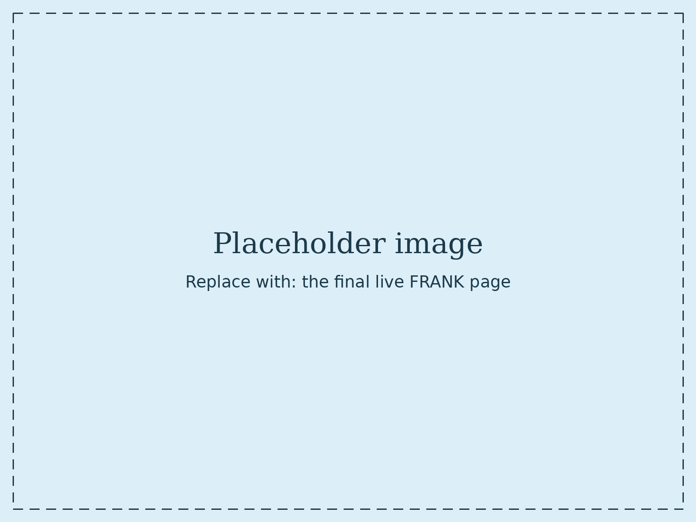

The challenge
FRANK is OCBC's banking product for students and young adults. It was going through two big changes at once: the old reward construct was being completely overhauled into a new one — earn either bonus interest on your balance or cashback on your spend, whichever is higher, automatically — and the "FRANK by OCBC" sub-brand was being retired, with FRANK carried forward as a product name under the OCBC umbrella.
The new construct came from the Deposits team's product managers. Our job in CX was to make it make sense — to take a genuinely good but complex reward mechanic and speak it in the customer's language, clearly enough to act on.
Students weren't short of options. They were comparing digital banks, poking around investment apps, and taking advice from Telegram and Lemon8. In that context, a product that takes effort to understand doesn't get a second look. Our research had to do two things: check whether FRANK still meant something to students now that the sub-brand was going, and find out whether the new construct was clear enough to act on. The harder problem turned out to be the second one — can someone tell it's a good deal in the ten seconds they'll give us.

Research & discovery
Over 30 interviews across two phases, spanning Polytechnic students, university students, and parents of teens turning 16.
Discovery started without the product — understanding how students actually manage money, what they trust, and what they'd already rejected. Then four rounds of moderated usability labs — over 30 sessions in total — each probing whether people understood the construct, and each feeding the next design iteration.
Across both phases I co-designed the discussion guides and synthesis frameworks, moderated sessions solo and alongside seniors, and led synthesis and reporting. Between formal rounds we also ran plenty of guerrilla testing — with colleagues and with the Frankpreneurship interns (university students in our target audience) — to gut-check whether each version actually landed.
What we found came down to one thing: the product was good, the explanation wasn't.
- In early labs, 5 of 8 students chose FRANK — but only after the mechanic was explained to them.
- "Whichever is higher" was consistently misread as a choice they had to make, when the bank does it automatically. Some hesitated to apply because they feared picking wrong.
- The $100 spend threshold that unlocked the bonus was buried, and percentages alone meant nothing — comprehension only arrived when people saw their own numbers.
"Additional 1%… whichever is higher for you, I don't understand."

The solution
Research directly reshaped the page. The "How You Can Earn" section went through 9 iterations and the calculator through 6, each change traced to something we'd watched go wrong.
Two changes did the heavy lifting:
A calculator that didn't exist before.
People couldn't judge the account from percentages, so we built one — showing total earnings in both percentage and dollar terms, across the five scenarios people got stuck on.
An illustrated example of how the higher amount is chosen.
This fixed the single most persistent misread. Instead of explaining the mechanic, the page now shows it happening.
Alongside those: a new headline ("Save or spend, you're always rewarded"), "whichever is higher" dropped from the value proposition, tabs removed so people reach the calculator faster, and detail moved into footnotes to cut upfront reading.



Outcome & reflections
35% increase in account openings in the first month after launch
FRANK launched in October 2025 with a 35% increase in account openings in the first month. The construct was strong; making it legible was what unlocked it.
Looking back, I'd bring parents into the research earlier. We spoke to them late, and what they raised — gatekeeping, account-opening triggers, the handover of financial independence — could have shaped strategy rather than confirmed it. I'd also track comprehension more systematically across iterations; we did it qualitatively, but a lightweight score per version would have shown stakeholders exactly how much each change moved the needle.